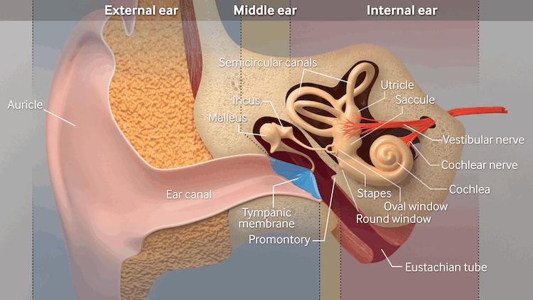

Silverstein Procedure
The Silverstein Procedure, also known as round and oval window reinforcement surgery, was developed by Dr. Herbert Silverstein as a surgical option for patients suffering from severe hyperacusis who have not found relief through conservative or medical treatments. The goal of the procedure is to reduce excessive sound transmission into the inner ear by reinforcing the membranes of the round and oval windows using soft tissue grafts (temporalis fascia, tragal perichondrium, or vein tissue). This reinforcement helps dampen sound energy and stabilize the mechanical response of the middle ear.
Key Features
- Designed to reduce sound sensitivity by dampening excessive sound transmission into the inner ear.
- Performed through a minimally invasive approach under local or general anesthesia, and patients typically go home the same day.
- Tissue grafts (temporalis fascia, tragal perichondrium, or vein) are placed over the round and oval windows to reinforce them.
- Intended primarily for patients with severe, treatment-resistant hyperacusis or sound-induced pain (noxacusis).
- Some patients report a significant reduction in sound sensitivity and improvement in quality of life following surgery.
The Enhanced Silverstein Procedure represents a refinement of the original approach. While the original procedure focused mainly on reinforcing the round and oval windows, the modern technique now reinforces the round and oval windows, the tympanic membrane, and includes the additional step of draping fascia over the incus to further reinforce the oval window. This modification is based on emerging theories suggesting that hypermobility of the stapes (the smallest ossicle) may contribute to abnormal sound transmission and pain sensitivity in hyperacusis and noxacusis. By stabilizing the ossicular chain and reducing excessive motion of the stapes, the updated procedure may offer more comprehensive protection against sound-induced discomfort. The Enhanced Silverstein Procedure is carried out using the following steps:
- Ten 2 mm pieces of temporalis fascia are used to reinforce the oval window.
- Oval window and ossicles are further reinforced by draping a 4 mm round piece of temporalis fascia over the incus.
- Round window is reinforced with two 2 mm pieces and a 4 mm piece of temporalis fascia.
- One 6 mm square piece of temporalis fascia is used to reinforce the posterior half of the tympanic membrane. Note that some surgeons have opted to use tragal perichondrium instead of temporalis fascia for certain portions of the procedure, as it is slightly thicker and may further reduce sound transmission.
The following image illustrates the major structures of the outer, middle, and inner ear. Note the round and oval windows, which are reinforced with several small pieces of fascia during the Silverstein Procedure. The stapes footplate rests on the oval window, transmitting sound received by the tympanic membrane and ossicular chain directly into the cochlea. As the stapes footplate moves inward, the round window membrane moves outward, allowing fluid within the cochlea to shift. This fluid movement stimulates the cochlear inner hair cells, enabling hearing. In addition to reinforcing the round and oval windows, the Enhanced Silverstein Procedure also uses a small piece of fascia to reinforce the tympanic membrane, while an additional layer is draped over the incus to stabilize the ossicles.

Because of limited data, small sample sizes, and the absence of randomized clinical trials, the Silverstein Procedure remains experimental, recommended primarily for patients with severe, refractory hyperacusis who have exhausted conservative options.
The Hyperacusis Surgery Talk community on Facebook features a number of real patient experiences and outcomes related to the Silverstein Procedure.
Surgeons Who Have Expertise in the Silverstein Procedure
Locating a specialist qualified to perform the Silverstein Procedure can be challenging, as only a limited number of surgeons have received training in this technique. To further complicate matters, individuals with severe hyperacusis may have difficulty traveling, if they are able to travel at all.
The Ear Research Foundation Fellowship Graduates website provides a list of physicians who trained with Dr. Herbert Silverstein, along with a map of their locations. However, not all of the physicians who trained at the Ear Research Foundation necessarily perform the Silverstein Procedure.
Below is a list of physicians who are either known to have performed the Silverstein Procedure or have indicated that they are willing to perform it. This list is intended to help patients identify qualified practitioners for consultation or treatment.
- United States:
- Dr. Herbert Silverstein, MD
Sarasota, FL
Possibly retired - Dr. Neil Nayak, MD
Sarasota, FL
Offers virtual appointment - Dr. Dennis Bojrab Sr., MD
Farmington Hills, MI
Offers virtual appointment - Dr. Matthew Farrugia, DO
Novi, MI
Does not offer virtual appointment - Dr. Jonathan Hatch, MD
Murray, UT
Does not offer virtual appointment - Dr. Mark Dean, MD
Fort Worth, TX
Offers virtual appointment - Dr. Ronen Nazarian, MD
Beverly Hills, CA
Offers virtual appointment
- Belgium:
- Dr. Michael Boedts
Ghent, BE
Offers virtual appointment